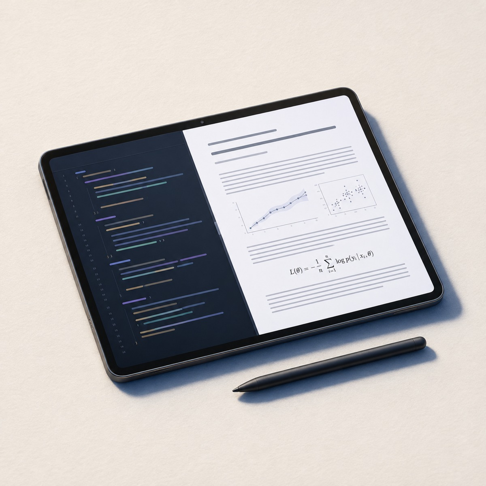

TypenTeX
投资人路演
平板能写完
一篇论文吗？
面向中国内地科研团队的平板学术写作工具
Edward（赵珊禾）
市场机会
谁有平板，却仍回电脑改论文？
1.8 万
南京大学 LaTeX 服务用户
校园案例，2025 年报告
目标作者
近 90 天改过 LaTeX 源码，拥有平板，却没在平板上改过源码。
一个可验证的场景
组会上发现公式编号有误。请作者带上自己的模板，观察能否在平板上改好并编译出 PDF。
先在参与试点的中国内地高校测量这类作者的占比。
写作痛点
论文排版的两种门槛
Word
LaTeX
版式调整
学习与调试
插入一张图，可能就要重查分页和编号。多人修改时，还要统一样式。
模板统一处理版式和编号。初学者仍需学习语法、配置宏包并理解编译报错。
产品机会在于保留 LaTeX 的模板能力，同时降低配置和调试成本。

产品原型
TypenTeX
在 Android 平板上编辑源码、核对 PDF
已发布 Android v0.0.4
首次下载宏包后可离线编译。AI 可在同轮创建并修改文件，编辑器自动刷新，保留最近 20 条编译日志。
规划中 账号与项目协作
登录后可保留纯本地项目，按需指令 AI 修改。主动上传后，才能跨设备同步或邀请协作者。
产品概念图
早期高校反馈（324 份）
熟练用户反馈指向 AI 质量
| 用户熟练度 | 好评 / 样本 | 好评率 |
|---|
| 初学者 | 72 / 107 | 67.3% |
| 有一定经验 | 88 / 101 | 87.1% |
| 熟练用户 | 73 / 116 | 62.9% |
31 / 43
条熟练用户差评主要归因于模型或智能体
233/324 人给出好评。试点将用 v0.0.4 单独测量首次修复成功率。
平板写作工具
竞争定位
| 维度 | Texifier iOS | Typst | TeXPage / FlyLaTeX | TypenTeX 规划 |
|---|
| 编译 | 本地可用 | 本地或在线 | 服务器 | 始终本地 |
| 引擎 | LaTeX | Typst | LaTeX | LaTeX + Typst |
| 平板端 | iPad 客户端 | 网页 | 网页 | 原生客户端 |
已发布 Android 版支持本地 LaTeX，下一步增加 Typst 与桌面客户端。
试点比较同一份中文论文模板在平板上修复并得到正确 PDF 所需的时间。
规划中的学术 AI 助手
学术 AI 如何协助作者完成一篇论文
拟微调完整规模的 DeepSeek-V4.1-Flash 与 Qwen3.8-Max
生成与修复排版代码
在设备上编译工作副本。失败后按授权发送报错与源码片段，重试至成功或作者停止。
论文润色
选中段落改写论证，保留原有数值、不确定性和引文。
研究方向建议
根据主题、数据和时间比较研究问题与方法，由学生与导师决定下一步。
组会幻灯片
选两个论文关键点，一键按其间的修改生成可编辑 PPT，每页可回查原稿。
训练使用获准使用的已发表学术作品和开源 LaTeX、Typst 样例。客户稿件不进入训练集。
中国内地研究生市场
平板写作机会有多大？
4.3 万
假设目标作者占 1%
每 100 名在读研究生中，若有 1 人符合目标条件。
12.9 万
假设目标作者占 3%
在同一条件下，每 100 人中若有 3 人符合。
21.5 万
假设目标作者占 5%
每 100 人中若有 5 人符合，可覆盖约 21.5 万人。
按 2025 年在读研究生 429.95 万人测算。全国实际占比待调查，达到 10 万人需约 2.33%。
商业模式
个人与课题组订阅价格
| 订阅方案 | 月费 / 空间 | 每月 AI 额度 |
|---|
| 尝鲜版 Plus | 18 元 / 10 GB | 200 积分 |
| 专业版 Pro | 38 元 / 50 GB | 1,000 积分 |
| 团队版 Team | 88 元 / 100 GB | 5 席共享 3,000 积分 |
两项系数均按同一基准输入价折算。组会 PPT 每交付一页扣 2 积分，已含内部调用。
积分 =（输入 token 数 × 输入系数 + 输出 token 数 × 输出系数）÷ 1,000。
商业发布后，人民币万元
三年收入情景与合同假设
100 / 500 / 1,500
各年月均付费工作区
每年新增 1 / 2 / 3 个院系
假设全部续约，按全年计费
三年总收入分别为 6.36 万、20.40 万、48.60 万元。算力、工程与销售成本另计。
收入测算假设所有工作区均订阅 18 元月费的尝鲜版，院系均接入已有模型。
获客与增长
高校试点与首批付费客户
高校试点
邀请 3 个院系和 1 个企业团队准备任务，先遣测试目标为 100 名作者完成首次本地编译。
个人与团队转化
正式收费后，验证能否获得 10 个付费账号、至少 5 个次月续费账号及 1 个付费院系部署。
机构渠道
通过图书馆和 CARSI 接触高校，由院系发起试点。企业客户可采购私有化部署与年度支援。
把机构续约和模型服务收入投入公开语料微调，以修复质量和续费检验增长。
开发与先遣测试
12 个月开发、测试与商业发布
前 9 个月
为 Android 加入登录，开发 iPadOS、macOS、Windows 端，以及双引擎、云同步、学术模型与文生 PPT。第 9 个月末开启先遣测试。
随后 3 个月
迭代修复质量、断网同步恢复与组会 PPT 的证据准确性，观察四周内的重复使用。
商业发布
开放付费订阅，通过图书馆、CARSI 和企业私有化部署开展机构销售。
规模化后扩展至 Linux、HarmonyOS PC 和 HarmonyOS（含平板）。
院系级试点拟议报价
四种机构部署方案
我方模型在院内部署
部署 6 万元。模型更新及维护另收 1.8 万元/年。
接入机构已有 AI
部署 3 万元。机构自行运维现有模型。
接入第三方 API
部署 3 万元。机构按已有合同向模型厂商支付用量费。
使用我方托管 API
部署 3 万元，另按积分付费。
四种方案的服务器支援均为 1.2 万元/年。
下一轮投入
资金用途与验证目标
客户端与编译
完成双引擎和跨端客户端。在真实论文模板上检验离线编译、冲突恢复与权限撤回。
学术 AI 与云协作
在 120 个留出任务上测修复效果。两种引擎分别以首修成功率达到 80% 为目标。
高校试点与合规
验证院系付费与续约，核实模型权重、学术语料许可和面向公众服务的合规要求。
欢迎洽谈投资与高校试点合作
Edward（赵珊禾）
THANK YOU
感谢聆听
欢迎洽谈投资与高校试点合作
扫码查看app发布页